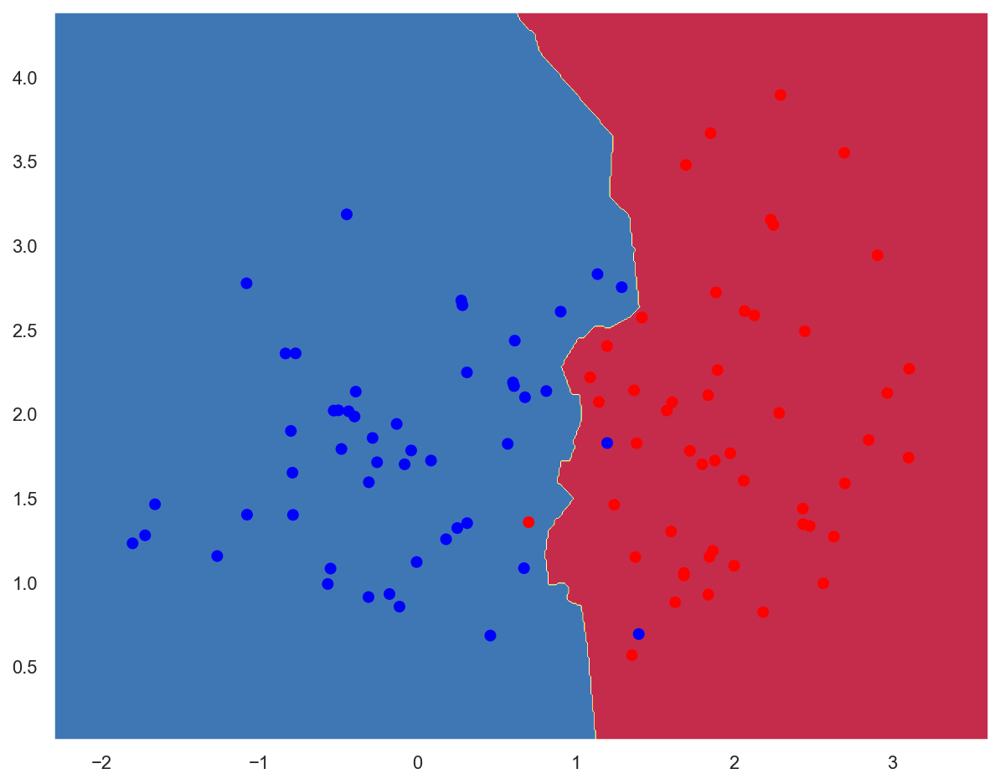
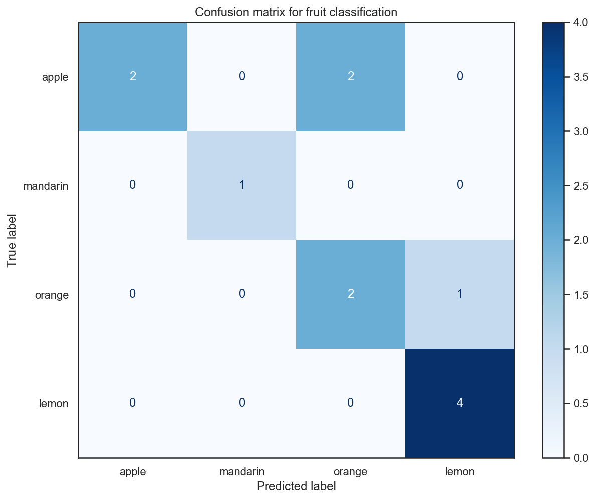
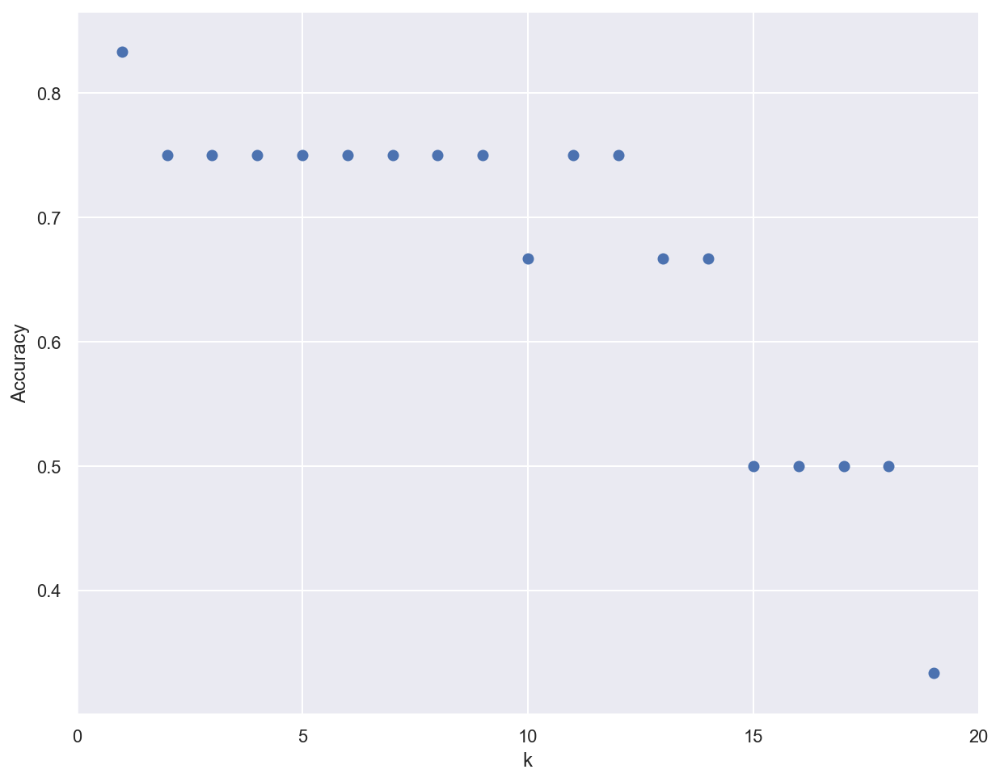
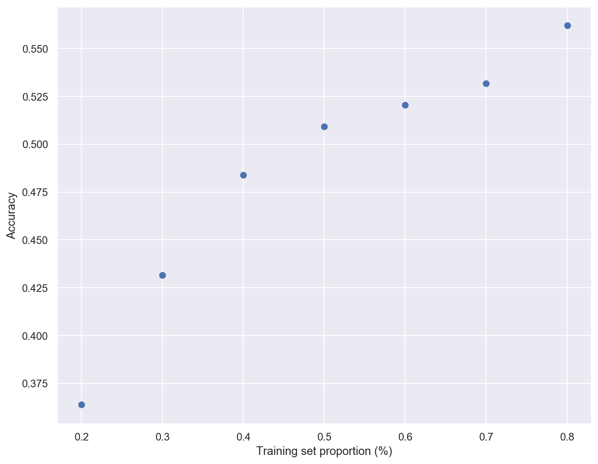

K-Nearest Neighbors
Contents
K-Nearest Neighbors¶
Environment setup¶
# Import base packages
import numpy as np
import matplotlib
import matplotlib.pyplot as plt
from matplotlib.colors import ListedColormap
import seaborn as sns
import pandas as pd
# Setup plots
%matplotlib inline
plt.rcParams['figure.figsize'] = 10, 8
%config InlineBackend.figure_format = 'retina'
sns.set()
# Import ML packages
import sklearn
print(f'scikit-learn version: {sklearn.__version__}')
from sklearn.datasets import make_classification
from sklearn.neighbors import KNeighborsClassifier
from sklearn.model_selection import train_test_split
from sklearn.preprocessing import StandardScaler
from sklearn.metrics import plot_confusion_matrix
scikit-learn version: 0.22.2.post1
Utility functions¶
def plot_decision_boundary(pred_func, X, y, figure=None):
"""Plot a decision boundary"""
if figure is None: # If no figure is given, create a new one
plt.figure()
# Set min and max values and give it some padding
x_min, x_max = X[:, 0].min() - .5, X[:, 0].max() + .5
y_min, y_max = X[:, 1].min() - .5, X[:, 1].max() + .5
h = 0.01
# Generate a grid of points with distance h between them
xx, yy = np.meshgrid(np.arange(x_min, x_max, h),
np.arange(y_min, y_max, h))
# Predict the function value for the whole grid
Z = pred_func(np.c_[xx.ravel(), yy.ravel()])
Z = Z.reshape(xx.shape)
# Plot the contour and training examples
plt.contourf(xx, yy, Z, cmap=plt.cm.Spectral)
cm_bright = ListedColormap(['#FF0000', '#0000FF'])
plt.scatter(X[:, 0], X[:, 1], c=y, cmap=cm_bright)
Planar data classification¶
x_train, y_train = make_classification(n_features=2, n_redundant=0, n_informative=2,
random_state=1, n_clusters_per_class=1)
rng = np.random.RandomState(2)
x_train += 2 * rng.uniform(size=x_train.shape)
plt.scatter(x_train[:, 0], x_train[:, 1], marker='o', c=y_train,
s=25, edgecolor='k')
print(f'x_train: {x_train.shape}. y_train: {y_train.shape}')
x_train: (100, 2). y_train: (100,)
model = KNeighborsClassifier(n_neighbors=5)
model.fit(x_train, y_train)
KNeighborsClassifier(algorithm='auto', leaf_size=30, metric='minkowski',
metric_params=None, n_jobs=None, n_neighbors=5, p=2,
weights='uniform')
plot_decision_boundary(lambda x: model.predict(x), x_train, y_train)

train_acc = model.score(x_train, y_train)
print(f'Training accuracy: {train_acc * 100:.2f}%')
Training accuracy: 97.00%
Fruits classification¶
Step 1: Loading the data¶
!wget http://www.eyrignoux.com.fr/coursIA/machineLearning/fruit_data_with_colors.txt -O fruit_data_with_colors.txt
--2020-04-28 12:23:14-- http://www.eyrignoux.com.fr/coursIA/machineLearning/fruit_data_with_colors.txt
Résolution de www.eyrignoux.com.fr (www.eyrignoux.com.fr)… 62.210.16.62
Connexion à www.eyrignoux.com.fr (www.eyrignoux.com.fr)|62.210.16.62|:80… connecté.
requête HTTP transmise, en attente de la réponse… 301 Moved Permanently
Emplacement : https://www.eyrignoux.com.fr/coursIA/machineLearning/fruit_data_with_colors.txt [suivant]
--2020-04-28 12:23:14-- https://www.eyrignoux.com.fr/coursIA/machineLearning/fruit_data_with_colors.txt
Connexion à www.eyrignoux.com.fr (www.eyrignoux.com.fr)|62.210.16.62|:443… connecté.
requête HTTP transmise, en attente de la réponse… 200 OK
Taille : 2370 (2,3K) [text/plain]
Sauvegarde en : « fruit_data_with_colors.txt »
fruit_data_with_col 100%[===================>] 2,31K --.-KB/s in 0s
2020-04-28 12:23:15 (133 MB/s) — « fruit_data_with_colors.txt » sauvegardé [2370/2370]
fruits = pd.read_table('fruit_data_with_colors.txt')
fruits.sample(n=10)
| fruit_label | fruit_name | fruit_subtype | mass | width | height | color_score | |
|---|---|---|---|---|---|---|---|
| 13 | 1 | apple | golden_delicious | 164 | 7.3 | 7.7 | 0.70 |
| 31 | 3 | orange | selected_seconds | 210 | 7.8 | 8.0 | 0.82 |
| 20 | 1 | apple | cripps_pink | 160 | 7.5 | 7.5 | 0.86 |
| 39 | 3 | orange | turkey_navel | 144 | 6.8 | 7.4 | 0.75 |
| 45 | 4 | lemon | spanish_belsan | 186 | 7.2 | 9.2 | 0.72 |
| 15 | 1 | apple | golden_delicious | 156 | 7.7 | 7.1 | 0.69 |
| 40 | 3 | orange | turkey_navel | 154 | 7.1 | 7.5 | 0.78 |
| 1 | 1 | apple | granny_smith | 180 | 8.0 | 6.8 | 0.59 |
| 49 | 4 | lemon | unknown | 132 | 5.8 | 8.7 | 0.73 |
| 36 | 3 | orange | turkey_navel | 160 | 7.1 | 7.6 | 0.76 |
Step 2: Preparing the data¶
# Evaluate class distribution
samples_count = fruits.size
for name in fruits['fruit_name'].unique():
class_percent = fruits[fruits.fruit_name == name].size / samples_count
print(f'{name}s : {class_percent * 100:.1f}%')
apples : 32.2%
mandarins : 8.5%
oranges : 32.2%
lemons : 27.1%
# For this example, we use the mass, width, and height features of each fruit instance
x = fruits[['mass', 'width', 'height']]
y = fruits['fruit_label']
print(f'x: {x.shape}. y: {y.shape}')
x: (59, 3). y: (59,)
# Split data between training and test sets with a 80/20 ratio
x_train, x_test, y_train, y_test = train_test_split(x, y, test_size=.2)
print(f'x_train: {x_train.shape}. y_train: {y_train.shape}')
print(f'x_test: {x_test.shape}. y_test: {y_test.shape}')
x_train: (47, 3). y_train: (47,)
x_test: (12, 3). y_test: (12,)
# Standardize data
scaler = StandardScaler().fit(x_train)
x_train = scaler.transform(x_train)
x_test = scaler.transform(x_test)
Step 3: Creating a classifier¶
model = KNeighborsClassifier(n_neighbors=5)
model.fit(x_train, y_train)
KNeighborsClassifier(algorithm='auto', leaf_size=30, metric='minkowski',
metric_params=None, n_jobs=None, n_neighbors=5, p=2,
weights='uniform')
Step 4: Evaluating the classifier¶
# Compute accuracy on training and test sets
train_acc = model.score(x_train, y_train)
test_acc = model.score(x_test, y_test)
print(f'Training accuracy: {train_acc * 100:.2f}%')
print(f'Test accuracy: {test_acc * 100:.2f}%')
Training accuracy: 91.49%
Test accuracy: 75.00%
# Plot the confusion matrix
# plot_confusion_matrix() was introduced in scikit-learn 0.22
if sklearn.__version__ >= "0.22":
# Temporary hide Seaborn grid lines
with sns.axes_style('white'):
display = plot_confusion_matrix(model, x_test, y_test,
display_labels=fruits['fruit_name'].unique(),
cmap=plt.cm.Blues)
display.ax_.set_title("Confusion matrix for fruit classification")
plt.show()

Step 5 - Using the classifier for predictions¶
# create a mapping from fruit label value to fruit name to make results easier to interpret
lookup_fruit_name = dict(zip(fruits.fruit_label.unique(), fruits.fruit_name.unique()))
# first example: a small fruit with mass 20g, width 4.3 cm, height 5.5 cm
fruit_prediction = model.predict([[20, 4.3, 5.5]])
lookup_fruit_name[fruit_prediction[0]]
'orange'
# second example: a larger, elongated fruit with mass 100g, width 6.3 cm, height 8.5 cm
fruit_prediction = model.predict([[100, 6.3, 8.5]])
lookup_fruit_name[fruit_prediction[0]]
'orange'
Step 6: Tuning the classifier¶
Importance of the k parameter¶
k_range = range(1,20)
scores = []
for k in k_range:
model = KNeighborsClassifier(n_neighbors = k)
model.fit(x_train, y_train)
scores.append(model.score(x_test, y_test))
plt.figure()
plt.xlabel('k')
plt.ylabel('Accuracy')
plt.scatter(k_range, scores)
plt.xticks([0,5,10,15,20]);

Importance of the training/test sets proportions¶
t = [0.8, 0.7, 0.6, 0.5, 0.4, 0.3, 0.2]
model = KNeighborsClassifier(n_neighbors = 5)
plt.figure()
for s in t:
scores = []
for i in range(1,1000):
x_train, x_test, y_train, y_test = train_test_split(x, y, test_size = 1-s)
model.fit(x_train, y_train)
scores.append(model.score(x_test, y_test))
plt.plot(s, np.mean(scores), 'bo')
plt.xlabel('Training set proportion (%)')
plt.ylabel('Accuracy');

TODO¶
Planar data: add multiclass data
Better loking graphs: https://stackabuse.com/k-nearest-neighbors-algorithm-in-python-and-scikit-learn/